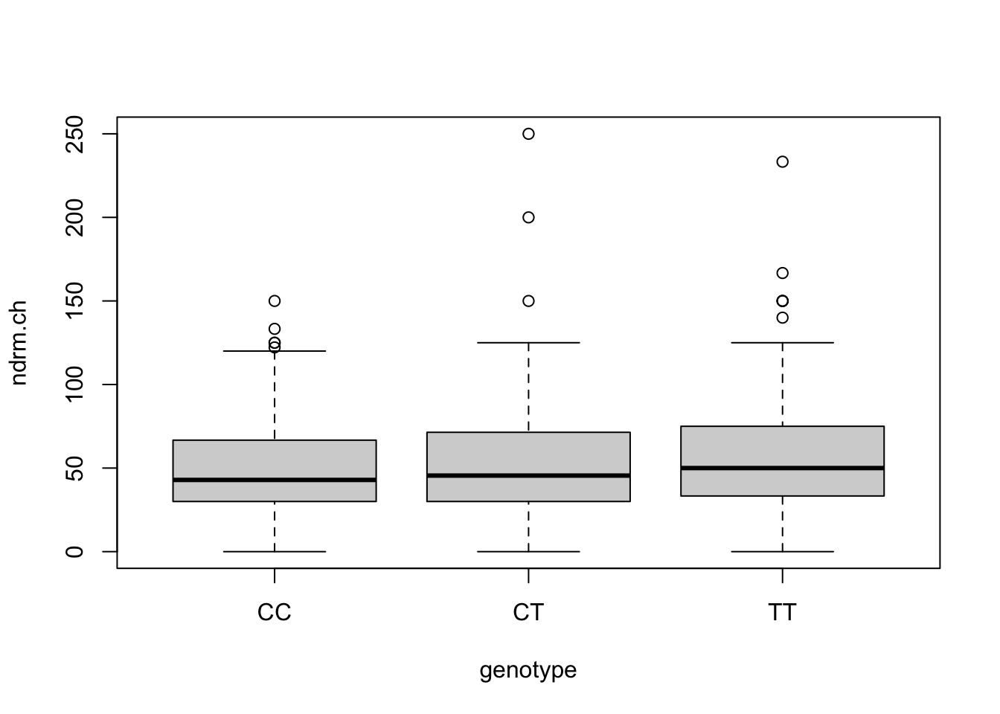
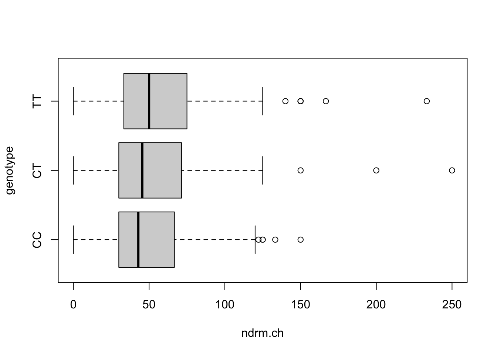

library(tidyverse)
load('data/famuss.RData')Lab 3: Bivariate summaries
This lab covers descriptive summaries and graphics for two variables. The goal of the activity is to learn to produce joint summaries of two variables for identifying relationships, in particular:
- contingency tables
- proportional stacked bar plots
- scatterplots
- side-by-side boxplots
We will use the FAMuSS dataset again.
Contingency tables
Counts
A contingency table is a summary of two categorical variables. Specifically, it is a two-way table in which:
- rows correspond to the values of one variable
- columns correspond to the values of the other variable
- entries are counts of the numbers of observations for each combination of values
In fact, a contingency table is a frequency distribution for two variables. It can be constructed in R by retrieving the two variables of interest and providing them as arguments to table().
# retrieve variables of interest
genotype <- famuss$genotype
sex <- famuss$sex
# make a contingency table
table(sex, genotype) genotype
sex CC CT TT
Female 106 149 98
Male 67 112 63The order of the arguments determines the row/column orientation of the table.
The values show the observation counts for each combination, so, for example, the number 106 in the upper-leftmost cell indicates that 106 participants were women with genotype CC.
Your turn
Make a contingency table of race and genotype, with race as the row variable and genotype as the column variable.
# retrieve variables of interest
# make a contingency tableProportions
To convert a contingency table to proportions, one can use either the grand total, row totals, or column totals. The resulting proportions have different meanings:
- grand total – combination frequencies
- row totals – column variable frequencies by row variable value
- column totals – row variable frequencies by column variable value
In the sex/genotype contingency table, these proportions would be computed and interpreted as follows:
# combination frequencies (using grand total as denominator)
table(sex, genotype) |> proportions(margin = NULL) genotype
sex CC CT TT
Female 0.1781513 0.2504202 0.1647059
Male 0.1126050 0.1882353 0.1058824# genotype frequencies by sex (using row margins as denominators)
table(sex, genotype) |> proportions(margin = 1) genotype
sex CC CT TT
Female 0.3002833 0.4220963 0.2776204
Male 0.2768595 0.4628099 0.2603306# sex frequencies by genotype (using column margins as denominators)
table(sex, genotype) |> proportions(margin = 2) genotype
sex CC CT TT
Female 0.6127168 0.5708812 0.6086957
Male 0.3872832 0.4291188 0.3913043Notice that the margin = ... argument controls which totals are used as denominators in computing proportions. The syntax is:
margin = NULLspecifies grand totalmargin = 1uses row totalsmargin = 2uses column totals
The interpretation of entries depends on which type of proportion is comupted. For instance, looking at only the upper-leftmost entry in each of the three tables above:
- [first table] 17.82% of participants were women with genotype CC
- [second table] 30.03% of female participants had genotype CC
- [third table] 61.27% of participants with genotype CC were women
If you lose track of which margin was which, you can always check yourself by looking at which values sum to one: if all the values add up to one, grand totals were used; if rows sum to one, row totals were used; and if columns add up to one, column totals were used.
Your turn
Convert your contingency table of genotype and race from the previous ‘your turn’ to a table showing genotype frequencies by race.
# genotype frequencies by raceThen, interpret the entry for Hispanic/CT in context.
Graphics
The latter two proportion tables – those constructed using row or column totals – can be visualized graphically using barplot(...):
# stacked bar plot showing genotype frequencies by sex
table(genotype, sex) |>
proportions(margin = 2) |>
barplot(legend = T)
This function is a little finnicky about the table orientation, so the most straightforward way to approach making the plot is to adhere to this rule of thumb:
- always use
margin = 2 - specify the order of the variables as they are input to
table(...)so that the grouping variable appears second
So, for instance, to visualize the sex frequencies by genotype, we would do the following:
# stacked bar plot showing sex frequencies by genotype
table(sex, genotype) |>
proportions(margin = 2) |>
barplot(legend = T)
If you see uneven bar heights, that means you have not configured the table correctly before passing it to barplot(...).
Your turn
Make a plot showing the genotype frequencies by race.
# stacked bar plot showing genotype frequencies by raceCheck your understanding:
- For which group is the CC frequency highest?
- For which group is the CC frequency lowest?
Scatterplots and correlation
Taller people tend to be heavier. We should expect a relationship between weight and height. The example below shows a scatterplot of the two variables, and computes the correlation (measure of linear relationship).
# retrieve height and weight columns
height <- famuss$height
weight <- famuss$weight
# basic scatterplot
plot(height, weight)
# correlation
cor(weight, height)[1] 0.5308787A rough rule of thumb for interpreting correlations is as follows:
- \(|r| < 0.3\): no relationship
- \(0.3 \leq |r| < 0.6\): weak to moderate relationship
- \(0.6 \leq |r| < 1\): moderate to strong relationship
In this case, the correlation of 0.53 indicates a moderate positive relationship.
Your turn
Is there a relationship between nondominant and dominant percent change in arm strength? Make a scatterplot and compute the correlation.
# retrieve the percent change variables
# construct a scatterplot
# compute the correlationSide-by-side boxplots
Consider one of the main questions for the study: were differences on the ACTN gene region associated with differential change in arm strength after resistance training?
This is a comparison between a categorical variable (genotype) and numeric variable (percent change in arm strength). For this type of comparison, a set of side-by-side boxplots is best:
# side-by-side boxplots for non-dominant arm
boxplot(ndrm.ch ~ genotype, data = famuss)
# change the orientation
boxplot(ndrm.ch ~ genotype, data = famuss, horizontal = T)
This graphics summarizes the frequency distribution of percent change in non-dominant arm strength separately for each genotype. It is essentially a grouped summary.
Your turn
Construct side-by-side boxplots of percent change in dominant arm strength by genotype.
# make side-by-side boxplots of percent change in dominant arm strength by genotypePractice problems
Trait anger is defined as a relatively stable personality trait that is manifested in the frequency, intensity, and duration of feelings associated with anger. It is thought that people with high trait anger might be particularly susceptible to coronary heart disease (CHD); 12,986 participants were recruited for a study examining this hypothesis and followed for five years. The
angerdataset includes data for the 8557 participants identified as having normal blood pressure (normotensives) and records, for each participant, whether they are classified as having high, moderate, or low trait anger, and whether they experienced a CHD event during the study period.- Make a contingency table showing trait anger and CHD event occurrence.
- Find the proportion of participants who experienced a CHD event in each trait anger group.
- Construct a stacked bar plot to visualize the frequencies you found in (b).
- Find the ratio \(\frac{\text{CHD frequency in the high anger group}}{\text{CHD frequency in the low anger group}}\). This is called the “relative risk” of a CHD event. (You can calculate this quantity by hand based on your result in (b).)
Use the
nhanesdata from earlier to answer the following questions.- Make a scatterplot of systolic blood pressure and diastolic blood pressure. Put systolic blood pressure on the y axis. Characterize the association, if any, as positive/negative/non-associated and linear/nonlinear.
- Compute and interpret the correlation between systolic blood pressure and diastolic blood pressure.
- Does there appear to be a substantial difference in the distribution of total cholesterol by sex? Construct side-by-side boxplots to answer this question.